Configuración de IP dinámica sobre interfaz física
Índice
Introducción
Ejemplo 1 — Configuración de IP dinámica sobre una interfaz física
Eliminando la configuración aplicada
Eliminación del cliente DHCP
Introducción
A lo largo de esta práctica trabajaremos sobre un escenario típico: la configuración de la interfaz que actuará como gateway, obteniendo su dirección IP de un servidor DHCP. Este enfoque es extremadamente habitual en entornos reales, donde el router no recibe una configuración fija, sino que depende de un proveedor externo (ISP, red corporativa, red del centro, laboratorio, etc.) para obtener sus parámetros de red.
• Primero, configuraremos direccionamiento IP dinámico, mediante un cliente DHCP sobre una interfaz física, el enfoque más simple y directo.
• A continuación, configuraremos esa misma interfaz con direccionamiento IP estático, analizando qué cambia.
• Después, daremos el salto conceptual al uso de bridges, aplicando una configuración de IP dinámica sobre un bridge, mediante la configuración de un cliente DHCP sobre el bridge.
• Finalmente, cerraremos con la configuración de un bridge con IP estática, que es el modelo más habitual en entornos reales con múltiples routers configurados en una red LAN.
Esta progresión permite observar cómo RouterOS separa claramente las capas de hardware, enlace y red, y prepara el terreno para configuraciones más avanzadas (LAN con múltiples puertos, firewall, etc.) que se abordarán más adelante en el curso.
Ejemplo 1 — Configuración de IP dinámica sobre una interfaz física
Este escenario aborda una configuración usual en entornos reales: la obtención automática de parámetros de red mediante DHCP, configurando una interfaz física del router como cliente DHCP.
En este caso no se asigna ninguna dirección IP de forma manual. Será el servidor DHCP de la red quien proporcione al router:
• Dirección IP
• Máscara de red
• Puerta de enlace por defecto
• (Opcionalmente) servidores DNS
El objetivo de esta práctica es configurar la primera interfaz del router (ether1) como cliente DHCP, comprobar qué información recibe automáticamente y verificar que el router puede comunicarse a través de dicha interfaz sin intervención manual en el direccionamiento IP.
Creación del cliente DHCP en la interfaz ether1
En primer lugar, vamos a comprobar que la interfaz ether1 no tiene ninguna IP configurada manualmente, tal como hemos visto en los tutoriales anteriores:
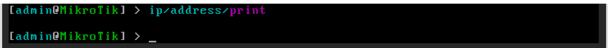
Una vez nos hemos asegurado de que no se ha aplicado configuración manual de IP sobre la interfaz ether1, podemos crear el cliente DHCP sobre dicha interfaz:ip/dhcp-client/add interface=ether1 disable=no
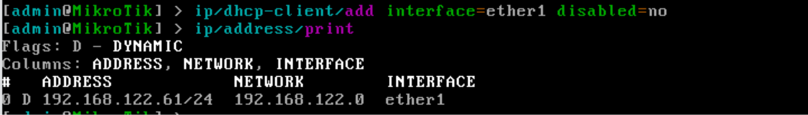
En la captura, podemos revisar los clientes DHCP activos, tras ejecutar el comando:ip/dhcp-client/print
ip/addresses/print
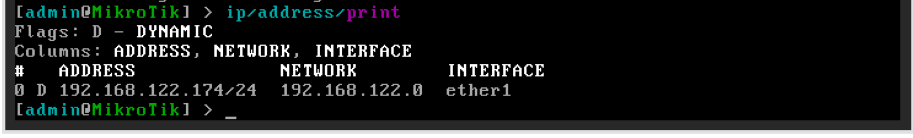
En la captura podemos observar el flag ‘D’, que indica que la asignación de IP se ha realizado de manera dinámica.
Si queremos obtener información detallada de la configuración asignada por DHCP, podemos ejecutar el siguiente comando:
ip/dhcp-client/print detail
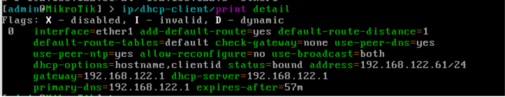
En la captura podemos observar, entre otros:
• La IP asignada.
• La Puerta de enlace de la red
• La IP del servidor DHCP
• La IP del servidor DNS primario
• …
También podemos comprobar la configuración asignada por DHCP (IP, ruta por defecto y servidores DNS) ejecutando los siguientes comandos:
ip/address/print
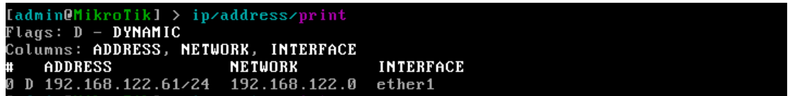
ip/route/print
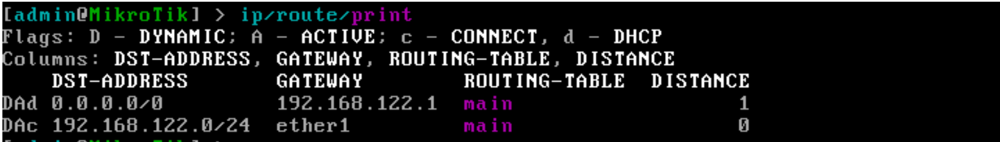
ip/dns/print
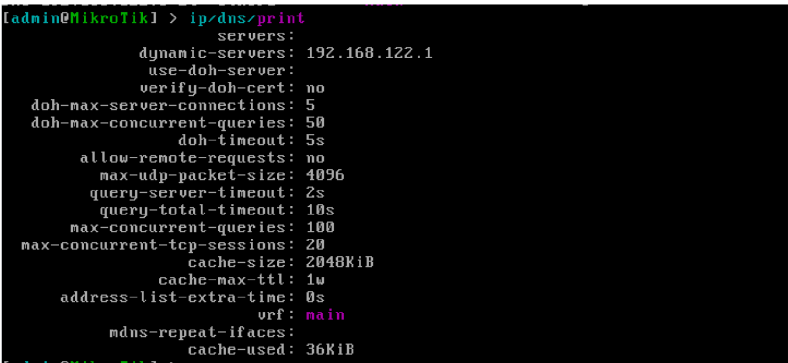
Por último, Podemos probar la conectividad de red, ejecutando un ping a Google.com, por ejemplo, mediante el comando:
ping google.com
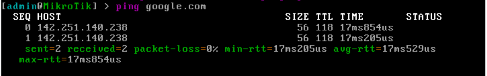
También podemos acceder al router utilizando un navegador web de la máquina anfitrión, a través de la IP configurada:
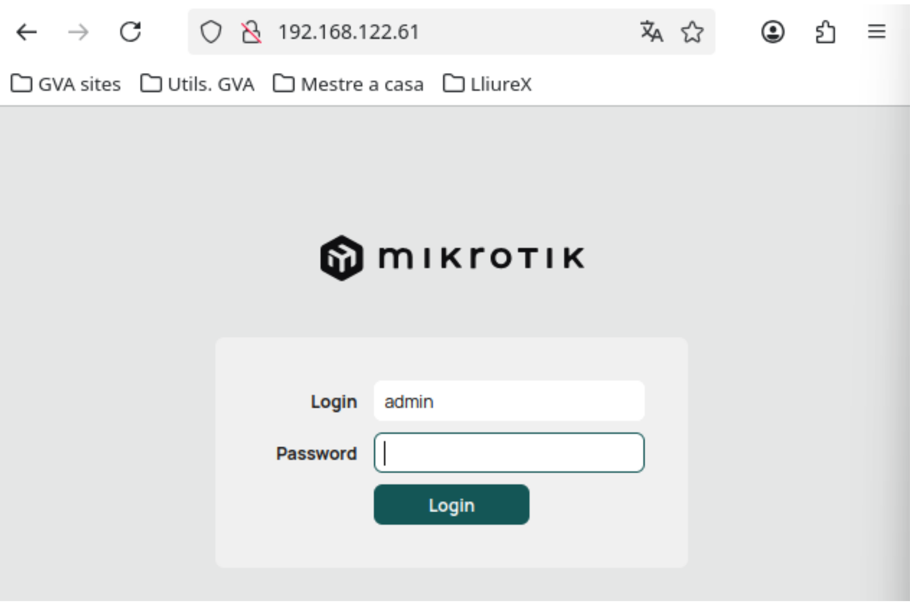
Eliminando la configuración aplicada
Antes de continuar, vamos a eliminar toda la configuración aplicada al router, para volver a tener un dispositivo limpio, sin necesidad de aplicar la configuración de fábrica.
Eliminación del cliente DHCP
Para mostrar los clientes DHCP configurados, ejecutamos el siguiente comando:
ip/dhcp-client/print
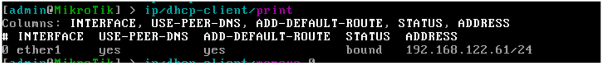
Para eliminar el cliente DHCP ejecutamos el siguiente comando:
ip/dhcp-client/remove <<índice>>
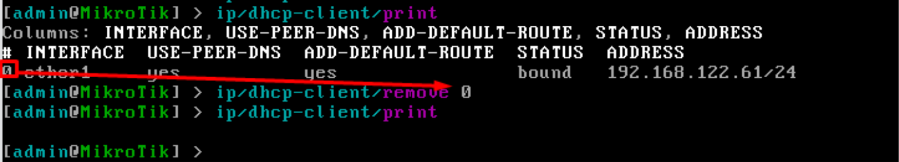
Al eliminar el cliente DHCP, se eliminará toda la configuración aplicada por el mismo. Podemos comprobarlo ejecutando los siguientes comandos:
ip/address/print
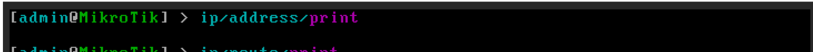
ip/route/print
ip/dns/print
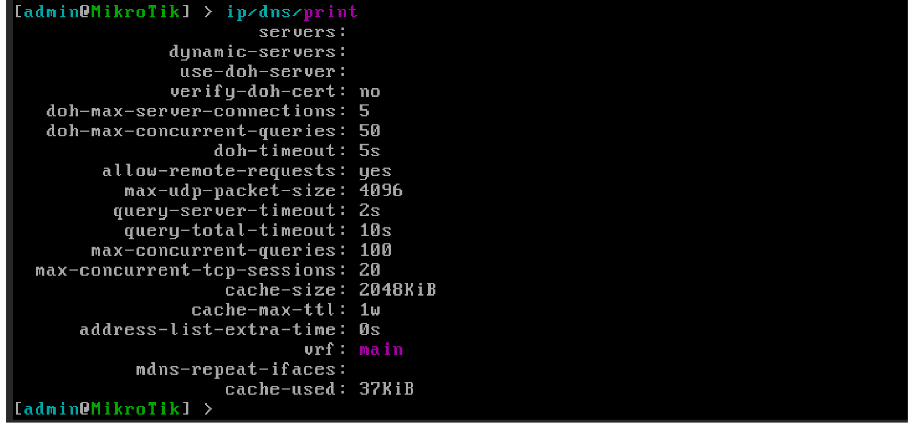
Ya tenemos nuestro router sin configuraciones por defecto, preparado para la siguiente práctica.